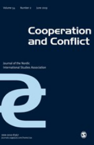

收录于合集

简 介
** 【作者】** Timothy Edmunds: 蒂莫西·埃德蒙兹，布里斯托大学国家安全教授，主要研究领域包括军民关系和安全部门改革。曾多次在《国际事务》、《欧亚研究》等期刊上发表论文，主要有《英国外交政策和国家利益：战略、争论和改变 》和《转型社会的安全部门改革》等。
Ana E Juncos Garcia：安娜·宏科斯·加西亚，布里斯托大学欧洲政治教授，主要研究领域包括欧洲外交和安全政策。著有《欧盟在波斯尼亚的外交和安全政策：连贯性和有效性政治》和《了解欧盟冲突预防和危机管理：机制，政策和角色》。
** **【 编译 】****袁蕙珈
** **【 校对 】****徐琛
** **【 审核 】****刘金晶
** **【 来源 】****Edmunds Timothy and Ana E. Juncos. “Constructing the Capable State: Contested Discourses and Practices in EU Capacity Building.” Cooperation and Conflict , July 2019.
** 【期刊】** 《合作与冲突》是一份同行评审期刊，发行50余年，致力于发表高质量的文章，研究问题广泛。《合作与冲突》以北欧和欧洲事务的传统研究领域。 该期刊严格遵守双盲审查政策。2018年影响因子为1.877，排名为政治科学类54/176，国际关系类21/91。

建 设有能力的国家：欧盟能力建设中的争议性话语和实践
Constructing the capable state: Contested discourses and practices in EU capacity building
****Edmunds Timothy Ana E Juncos Garcia
内容提要
能力建设是近来国际社会中出现的具有重要地位的热词，它也是国家在脆弱的后冲突环境中增强安全与促进发展的一种方式。本文采用了分析官方文件与在波斯尼亚等地区的实地调查两种方式，检验了欧盟在后冲突时代的能力建设计划。 本文 研究了欧 盟能力 建设 话语背后的合理性和问题， 通过 进行 三种假设 —— 缺失 正式机制 、 缺失 权力 和 缺乏 专业知识 —— 探究 在 实践 过程 中 地方 层面 和 国家层面 之间的相互作用和 相互 竞争， 其 **** 产生的 新 结果 既 未 直接反映 现状，也不代表外部能力 建设 者 权力的线性强加。
**
**
文章导读
**1
**
能力建设的理论化发展
能力建设是国际行为体增强安全和促进发展日渐重要的一种策略。其涵盖内容广泛，包括饱受战争蹂躏的、脆弱的国家加强应对其安全挑战的能力，与在建设缔造和平、国家建设和安全部门改革（SSR）的背景下得以实现自身发展目标的能力。它假定地方行为者最适合理解和解决他们自己的安全挑战，并且给与协助（而不是取代）将带来有效的，合法的和可持续的结果。
福柯（ Michel Foucault ）提出的“治理性（governmentality）”概念提供了一个视角，帮助我们从能力建设计划（capacity building programmes）这一角度理解权力的运行方式与知识的传播至非西方的途径。 这一 “ 治理 性 ” 指的是 行为引导 ， 它 是一种间接管理方式 ， 主要 管理 被管理人 达成的 一致 同意 意见 ， 并 辅之以 自我 规范 和 自我 责任 界定 。 ****同样，欧盟在安全领域能力建设的努力可以看成是一种规则装置，可以使受管治的国家和人民如自由（有能力）的国家一般成为负责任的行为体。能力建设并不仅限于提供增强国家安全感的方法， 它还传播了一种话语，即将“模范国家”认定为自由（有能力）的国家。 如文所示， 能力 建设 的合理性 基于 一种特定的，根深蒂固的视角 ， 这一视角认定具有 功能主义 的 、 集中 化 的 和自由主义 的国家才是有能力的国家 ，反之则不是 。
**
**
**2
**
**
欧盟能力建设的合理性
**
为增强其抵御能力而建设合作伙伴关系已被确定为欧盟的一项关键战略目标。 与其他组织 （ 如 ** OECD** ） 类似，欧盟将能力定义为 “ 将 人员、组织和社会作为整体成功管理其事务的能力 ”。 因此，能力 建设 需 要 以受 援行为体 的 内 在 动 力 与 所属 地方 的 主 权为基础，不能由外部 强加。 ****欧盟的角色是脱离外部干预的自由主义和平话语的促进者。欧盟的能力建设被概念化为天然 地具有整体性，涵盖一系列广泛的活动。
能力建设已成为欧盟安全话语中的一个关键优先事项，以至于内部人士经常将其称为新的“流行语”。欧盟官方的言论强调内部能力，而不是外部驱动的改革进程，以及在设计和实施阶段将地方所有权作为一项关键原则的必要性。官方定义还指出了能力建设的全面和整体性质。
欧盟能力建设的前提是，“有能力”的国家是功能主义、集中化的和自由的国家。这种愿景或想象可以理解为欧盟能力建设的政治合理性。然而，欧盟推动的改革不仅仅是技术性的， 他们还推动了政治和经济重组的具体模式，这些模式紧跟西方自由主义的国家想象。欧盟确定了以下支持能力建设的原则：“促进尊重国际法，特别是人道主义法和人权法，性别视角，联合国安理会第1325号决议以及民主和善政原则是这些努力的组成部分”。 由 此，能力 建设 与 规范性问题紧密相关 ，其 涉及 如何最好地 运用 能力 进行 更广泛的民主治理、国家 建设 与 改革 。 因 此， 如果 欧盟 使其 成为符合 自 由（有能力）国家模式 要求 的负责任的行为体 ，并依 这一模式 来管理国家和人 民 ，那么 这一具有功能性的 方法 在这个程度上 也 可以被视为 极具政治性 。 ****当然，在地方层面，人们普遍认为，能力建设是把源于西方模式的特定治理形式强加于地方的机制。在某种程度上，欧盟的能力建设决定了地方层面上怎么认识 “有能力的国家”，但这也会引发争议。
**3
**
关于地方层面的三个假设
本文讨论了能力建设在地方层面上的三个具体的问题性假设： 假设 目标国家的机制薄弱 甚至 失败 ； **** 假设 国际 能力 建设 者由于其优越的资源和 强大 自身能力，与 当地行为体 建立了 不 对称的权力关系 ； 假设 国际 上 提供了如何克服这些弱点的 专业 知识 。这三个假设揭示了，建设在地方层面进行能力建设时，这些问题将产生的紧张关系。但是，这种碰撞是富有成效的，这带来的新的结果既不能直接反映现有的现状，也不代表外部能力建设者对权力的线性强加。
第一是机制问题 。欧盟的能力建设活动主要集中在建设国家的正式机制。它们包括国家的官僚和行政机构，警察，武装部队或法院等组织，以及管理职业发展等过程的规则和条例。 相比之下，非正式机制是“社会共享规则，通常是不成文的，在官方认可的渠道之外创建，传播和执行”，包括宗族或种族纽带，亲属关系和庇护者网络，习惯法或非国家安全提供者（如社区观察团体或社区民兵）的治理结构。非正式机制通常与正式机制同时存在，有时甚至可以取而代之。在正式国家机制薄弱或缺乏的环境中，填补治理空缺的通常是非正式机制。比如，宗族结构可能取代国家机构调解社区内的争端，进行资源分配。习惯法可能会在法院不起作用或难以获取的地方取代成文法。作者还认为当警察或底层官员报酬很少时，小额腐败或贿赂可能起到非正式的报酬手段的作用。欧盟的能力建设计划很少发生在机制能力完全缺失的环境中。相反，它们一起发挥作用并且意图用“有能力的国家” 取代现有的非正式机制。非正式机制可以取代、破坏或强化其对应的正式机制，并且可以在国际能力建设计划中发挥类似的作用。在索马里兰，人们认为宗族制度在确定警察和海岸警卫队等组织的任命和晋升方面发挥着重要作用。而能力建设旨在引入绩效和基于专业知识的晋升和任命制度，这是对迄今负责这些事项的非正式机构的直接挑战，所以受到当地精英的强烈抵制。总之，非正式机制有时会取代其正式的等同机制，比如索马里兰警察法；也可能会破坏正式机制并导致抵抗，比如氏族系统。但影响也不全都是消极的，非正式机制也可以鼓励当地人在他们可能不愿意的情况下与国际行为体接触。
第二个问题是权力关系，即认为欧盟与当地行为体之间存在 不 对称的权力关系 。然而，地方行为体在与欧盟打交道时往往拥有大量的权力资源，即使在功能失调最严重的国家也是如此。实际上，无论他们在资源或技术技能方面的相对差异如何，在政策实施中扮演着关键的执行角色的是地方行为体。至少，他们是关键的守门人角色，可以使外部帮助者便于接触相关受援国的机构、地理区域和重要个人，并提供语言技能和重要相关知识。在指导或阻止接触能力建设中涉及的特定利益相关者或群体方面，这种守门角色很重要。它可能导致有利的群体被纳入，而其他群体被排除在外，这对于获得能力建设举措经常带来的资源及其最终有效性都有影响。他们可以在地方精英和国际人士之间的基本沟通方面发挥关键的中介作用。这表明，国际行为体一定程度上依赖地方合作伙伴实施其计划，同时地方可以利用他们在当地的权力优势，为自己的利益塑造国际活动和资源。比如，波斯尼亚的警察改革。欧盟坚持进行应警察改革，但波斯尼亚地方认为改革不符合他们的需求和利益，只推行了一些表层的变化或者甚至全然无视欧盟的建议。
第三是专业知识问题 。如上所述， 欧盟的能力 建设 的 一个前提是假设当地行为体之间存在长期的专业知识 鸿沟 。 ****然而，这种缺失的话语有可能掩盖国际上的关键知识差距以及干预过程中在实地发生的不同知识形式的相互作用。例如，对欧盟能力建设计划的批评之一是，它们对其所处当地环境的政治和社会动态知之甚少。总之，能力建设者关 于缺乏当地知识和专业知识的假设可能在地方层面引起争论。相反，国际层面的能力建设者在地方领域的知识欠缺，事实上也需依赖于当地知识文化形式和中间沟通者。
**4
**
结 论
本文试图揭示欧盟能力建设活动背后的合理性和问题性。本文认为，能力建设可以被理解为广义治理的一部分，其从外部确定什么是“有能力”的主体。从政府角度来看，分析表明欧盟的能力建设计划依赖并渴望产生特定形式的国家主体性。具体而言，欧盟能力建设的合理性旨在建立一个具有功能主义的，集中化和自由主义国家形式的“有能力的国家”，同时排除不可接受的国家能力形式。问题是，国际能力建设者继续推动受西方启发的“有能力国家”模式，这些模式的前提是假设目标国家的机制薄弱甚至失败；假设国际能力建设者由于其优越的资源和强大自身能力，与当地行为体建立了不对称的权力关系；假设国际上提供了如何克服这些弱点的专业知识。这也是为什么国际能力建设者难以超越有能力的国家这一理想化概念，并在地方环境中复杂的治理现实里遭遇困难。
_ ** _ ** _ ** _ 本文由国际学人编辑推荐**__
往期阅读
【重磅速递】约瑟夫·奈：美国霸权的兴衰：从威尔逊到特朗普 | 国政学人
【重磅推荐】巴里·布赞：英国学派视角下的中国崛起 | 国政学人
【重磅速递】米尔斯海默：注定失败：自由主义国际秩序的兴衰 | 国政学人
【IPE重磅】罗伯特·基欧汉：国际政治经济学的新与旧 ｜国政学人
【百年国关】历史在国际社会中的应用：从巴黎和会到现在 | 国政学人
【国际组织】IO杂志：联合国维和行动的武力运用问题研究 | 国政学人
【国际秩序】为什么自由主义国际秩序理念将美国外交政策引入歧途？| 国政学人
【关系理论】“关系”：世界政治关系理论的中国话语 | 国政学人
【英国学派】张勇进：中国与全球国际社会中的自由主义等级制：实力与对规范变迁的协商 | 国政学人
【地区秩序】论经济实力的可转化性：中国经济崛起与东亚安全秩序 | 国政学人
【中俄关系】不得已的伙伴：系统-单元动态与中俄关系 | 国政学人
【IPE研究】美国对外贸易政策的“1934年体制”是如何形成的？| 国政学人
【现实主义】斯蒂芬·沃尔特：傲慢的终结与美国克制的新时代 | 国政学人
【理论批判】系统、层次与结构理论：沃尔兹的理论并非系统理论 | 国政学人
【外交政策】单极体系下的不和平状态与美国外交政策 | 国政学人
【欧洲研究】资本主义多样性与合规：加入欧盟后中东欧的经济改革 | 国政学人
【理论研究】吴建树：权力、道德、均势、联盟与摩根索——汉斯·摩根索的经典现实主义思想再解读
【友谊国关】将友谊重新引入国际关系：从中国到西方的关系本体论
【定量研究】政党实力和经济增长（Party Strength and Economic Growth）| 国政学人
【台湾学者】向骏：美国从“霸权稳定”到“霸凌不稳定” | 国政学人
【理论研究】巴里·布赞等：重思日本：主流国际关系理论的偏见 | 国政学人
【南亚研究】南亚对冲：中印竞争中经济和安全利益的平衡 | 国政学人
【外交政策】美国霸权的自我毁灭：华盛顿浪费了单极时代 | 国政学人
【定量研究】谁在欧洲议会中领导委员会？ ——基于2014年欧洲议会选举的研究 | 国政学人
【定量研究】暴露于难民危机之中会让当地人更有敌意吗？| 国政学人
【恐怖主义】恐怖主义组织扩展数据（EDTG）的介绍——从1970年到2016年 | 国政学人
【定量研究】赞助、信任和国家能力：庇护主义的历史轨迹 | 国政学人
【伊朗研究】比较伊朗伊斯兰革命前后威权政体的本质和领导能力 | 国政学人
【东亚研究】东亚的重叠式区域主义：决定因素和潜在影响 | 国政学人
【战争研究】不确定的战争：克劳塞维茨在全球时代仍适用吗？｜国政学人
【历史类比】克服西方历史想象的贫困：理解中国南海冲突的其他历史类比案例 | 国政学人
【区域重磅】阿米塔·阿查亚：重塑东南亚研究：自我怀疑、渴望和对比较的承诺 | 国政学人
【安全研究】打击军事力量的新时代：科技变化与核威慑的未来 ｜国政学人
【理论研究】砝码国家何以自抬身价？——两极格局下同盟政治中的“科林斯难题”研究
【中东研究】国际误识：以色列公共外交中的幽默政治和国家认同 | 国政学人
【IPE研究】公平贸易运动对内嵌自由主义的挑战 | 国政学人
【社群冲突】非洲农村社群冲突分析：剩男与一夫多妻的邻族 | 国政学人
【安全研究】核机会主义：一种在国际政治中国家如何使用核武器的理论 ｜国政学人
【方法研究】我们应该在多大程度上信任乘积交互模型？改进实证研究的简单工具 | 国政学人
【国际格局】查尔斯·格拉泽：为何单极格局并非如此重要？| 国政学人
【巴以问题】为合法性而“战”：以加沙船队为例的行事竞争 ｜国政学人
【中国外交】IS杂志：声誉、决心与中国在南海争端中强制手段的运用丨国政学人
【安全研究】IS杂志：相互依赖的武器化：论全球经济网络对国家强制权力的塑造作用 | 国政学人
【冲突研究】反政府组织资金与儿童士兵：探索自然资源与强行征募的关系 | 国政学人
【全球治理】罗伯特·基欧汉：气候变化机制复合体 | 国政学人
【欧洲研究】欧债危机到申根区危机：一体化理论、政治化和身份政治 | 国政学人
【冲突研究】科技，战争和国家：过去，现在与未来 | 国政学人
【理论研究】促进国际关系理论中的自由：以安·兰德为例丨国政学人